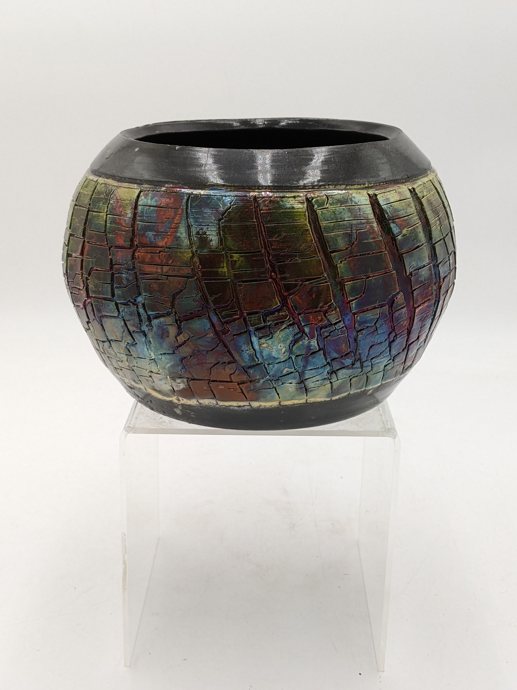
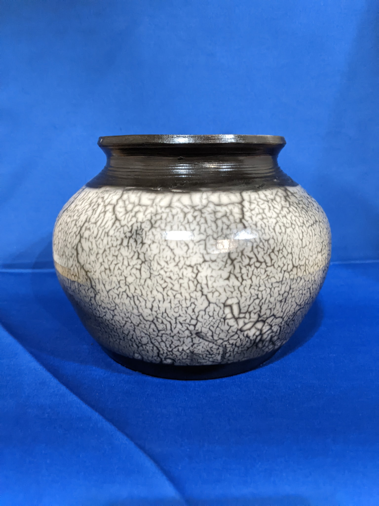
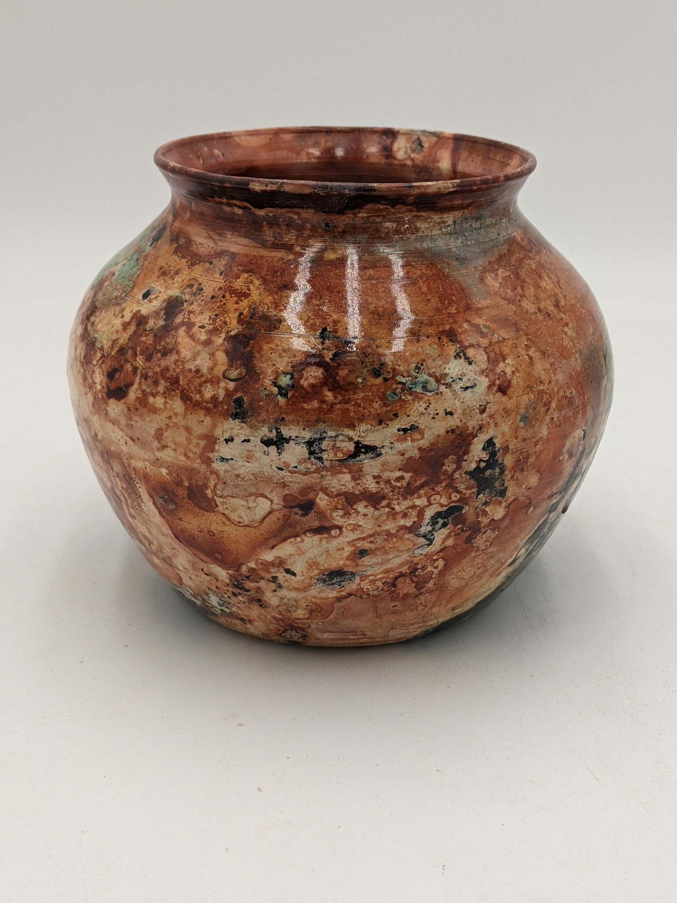
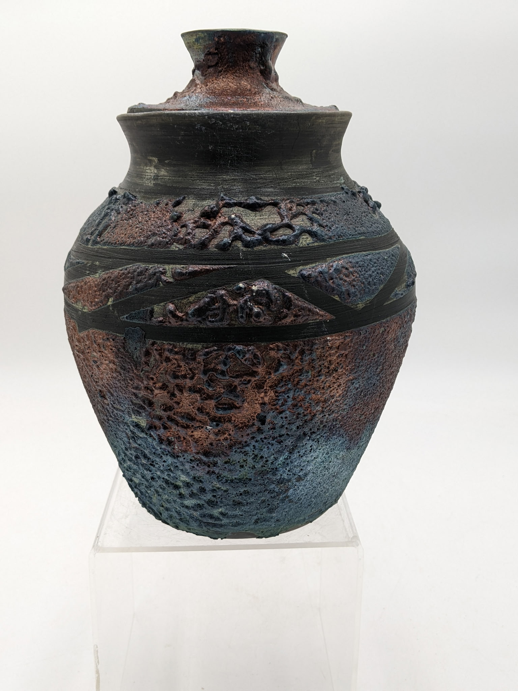
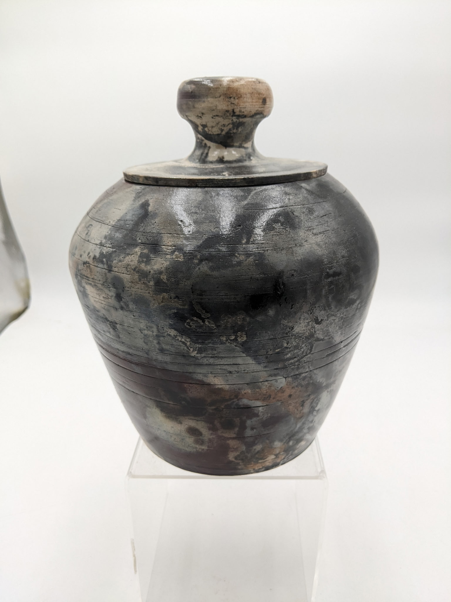

Robert Mohler
Chattanooga, TN
Email: OYATEPOTTERY@gmail.com
Facebook: Follow us on Facebook
These last 17 years learning from a number of individual artists, I have concentrated my efforts in several of the more ancient firing methods. One of the great advantages of the methods here is the quick turnaround, which allows the artist to make changes on the fly and gain feedback without having to wait. During my working career (sales), I was fortunate to travel the US extensively and made it a point to visit local studios where I could ask questions and share ideas. With very few exceptions, the clay community has always been open to sharing ideas and methods. Moreover, studios tend to be a happy, friendly environment.
PITFIRE is certainly the oldest method of vitrifying clay, though modern ores and other additions have made this an excellent avenue for creative expression. Pitfire can be as simple and easy as just cutting holes in a 50gal barrel.
RAKU, in all its forms, remains my favorite glazing method. The ability to control and manipulate time, temperature and glaze ingredients allows the artist a wide range of palettes. In these RAKU sections, I have included NAKED RAKU, FERRIC CHLORIDE and standard RAKU.